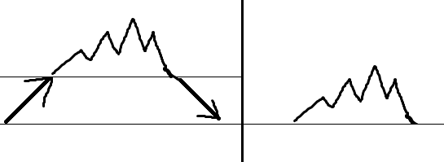
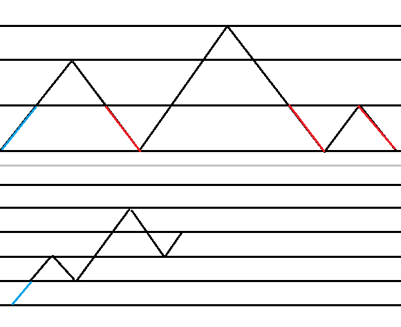

组合计数练习
括号序列和折线法
一个经典的问题：一个括号序列的最长的合法括号子序列有多长。
折线法解决经典问题
不难发现，每一个左括号，也就是上升的部分，我们总能指定他右边和他同高度的右括号，然后消掉。

所以消到最后，我们总是会得到一条先下降后上升的折线，可以发现，这样子消不会改变整个折线的最低点，所以，一个指定起终点的折线，其最长的合法括号子序列取决于这条折线的最低点 。
这也是用折线法解决括号序列问题会非常方便的原因。
练习
指定起终点，问最低点低于某个高度的折线数量。
对应在括号序列：指定左括号和右括号的数量，限制最长合法括号序列的长度小于某个值。
做法就是折一下就行了。
有多少个折线满足 $(0,0)\to(len,0)$ 且在 $y=0$ 上方，且恰好有 $m$ 个点在 $y$ 轴上。
对应在括号序列：有多少个合法的括号序列满足可以恰好分成 $m-1$ 份，使得满足每一份都是：$(A)$ ，$A$ 是一个合法的括号序列。
做法就是：考虑每次要到 $y=0$ 的那一段就去掉，认为起点是在 $(1,1)$ ，同时整条折线不能碰到 $y=0$ 这条线，则答案等价于从 $(1,1)\to (len-m+1,m-1)$ 的折线数量。（认为起点在 $(1,1)$ 是因为我们要求这条线不能碰到 $y=0$ ）

使用排列计算概率的方法
介绍
有些时候，一些问题会涉及到等概率选择一些剩余的点，并且删除这个点和一些与这个点有关联的点集，然后问关于这个过程的一些概率或者是数量问题，就可以尝试使用这个方法。
这个方法的关键在于：考虑将被删除这个操作看成一个删除标记，只有当一个点被选中，才会被真正的删除，这样每个点恰好被选一次，只不过，如果选中了一个点有删除标记，就重新选（这个点也视作已经被选了，真正删除掉），直到选到没有标记的为止，由于没有标记的点数量不变，所以每个点在各种情况下被选中的概率不变。
形式化的表述就是：对于任意一个排列，其对应的情况为：每个点有被选中当且仅当能删除他的节点都在他后面，而选中的先后顺序就是排列的先后顺序。
则一种情况的概率就是能对应到这种情况的排列的出现概率。
这样，就把计算概率，变成了统计符合条件的排列数量。
练习
现在有 $n$ 个数字，每次选择一个没被删除的数字，并且删除这个数字的所有倍数，问每个数字被选中的概率。
设 $d(i)$ 为 $i$ 的约数个数，显然答案就是 $\frac{1}{d(i)}$ 。
给定一个 $DAG$ ，每次选择一个没被删除的点，然后删除他能到达的所有点，问期望进行几轮。
期望可以转化为求每个点被选中的概率和，一个点被选中的概率为 $\frac{1}{能到达他的点的数量}$ 。
给定一个数字 $n$ ，令 $n=等概率选择1到n-1中的一个数字$ ，直到 $n\le k$ ，问期望轮数。
同理：可以看成是每个点可以删除所有 $\ge$ 他的点，和上一题基本一样，答案就是所有 $>k$ 的点的经过概率之和。
答案为：$1+\sum\limits_{i=k+1}^{n-1}\frac{1}{i}$ 。
这道题目还有个加强版，但是做法基本一样，讨论一下就行了：Codeforces Round 921 Div.1 E.Paper Cutting Again
题目大意：给定 $n*m$ 的纸，每次可以等概率选择 $n-1$ 条整数横线或者 $m-1$ 条整数竖线，剪开然后丢掉下面或者右边的部分，问当面积小于 $k$ 时至多需要多少轮。
$n,m\le 10^{6},2\le k\le 10^{12}$
图计数
练习
求 $n$ 个有标号点的无向图的数量。
做法
容斥原理，枚举 $1$ 号点的连通块大小就行了。
时间复杂度：$O(n^2)$ 。
求 $n$ 个有标号的点的边双联通图的数量。
DP做法
方法 1 ：设 $dp[i][j]$ 表示有 $j$ 个点，恰好有 $i$ 个连通块的图的权值和（一个图的权值定义为每个连通块大小的乘积），然后枚举 $1$ 号点所在的边双大小进行容斥。
设 $f_i$ 表示 $i$ 个点的联通块数量， $g_i$ 表示 $i$ 个点的边双联通块数量。
方法 2 ：设 $dp[i][j]$ 表示有 $j$ 个点，恰好有 $i$ 个点双连通块且点双之间不连通的图的权值和（一个图的权值定义，为每个点双连通块大小的乘积）。
显然：$dp[i][j]=\sum\limits_{k=1}^{j-(i-1)}dp[i-1][j-k]\binom{j-1}{k-1}k*g_k$ 。
注意到，先固定一个 $j$ ，除了 $dp[1][j]$ 以外的 $dp[i][j]$ 的转移都不依赖 $g_j$ ，所以考虑先处理出 $dp[i][j],(i\ne 1)$ ，然后用容斥算出 $g_j$ ，然后再求 $dp[1][j]$ ，从而完成 $dp[i][j]$ 对所有 $i$ 的转移。
实现上就是 $j$ 从小到达枚举，每一层先对 $i\ne 1$进行转移，再求 $g_j$ ，再求 $dp[1][j]$ 即可。
至于容斥的式子：$g_j=f_j-\sum\limits_{i=2}^{i}dp[i][j]*j^{i-2}$ 。
时间复杂度：$O(n^3)$ 。
方法 $1$ 更加自然，方法 $2$ 主要是感觉 $dp$ 顺序非常的奇妙，所以就记录一下。
一些奇奇怪怪的方法
必定经过的事件集
想法来自：
https://www.luogu.com.cn/blog/xuanxuan001/solution-cf1924e
介绍
当你想要求一个事件的概率时，可以找一些其他事件，使得这个事件集必然发生，且在这个事件集发生的条件下，这个事件集内的每个事件的发生概率固定，那么就可以知道我们想要的事件的概率。
例子
Codeforces Round 921 Div.1 E.Paper Cutting Again
题目大意：给定 $n*m$ 的纸，每次可以等概率选择 $n-1$ 条整数横线或者 $m-1$ 条整数竖线，剪开然后丢掉下面或者右边的部分，问当面积小于 $k$ 时至多需要多少轮。
$n,m\le 10^{6},2\le k\le 10^{12}$
做法
假设纸张为 $(n’,m’)$。
不难想到先转化为 $(n’=x,m’=y):xy\ge k$ 的事件的经过概率之和。
那么经过 $(x,y)$ 的概率有多少呢？
不妨先假设 $m=y$ 。
不难发现，第一次使得 $n’\le x$ 或者 $m’<m$ 的事件集构成了一个必然事件集，且内部的事件都是等概率的。
所以使得 $n’=x,m’=m$ 的概率为：$\frac{1}{x+m-1}$ 。
那么当 $x<n,y<m$ 如何处理？
首先，我们得求得第一次使得 $n’=x,m’=y$ 的概率，类似的，令第一次 $n’\le x$ 或者 $m’\le y$ 构成一个事件集，所以 $n’=x$ 或者 $m’=y$ 的概率为 $\frac{2}{x+y}$ ，然后剩下的情况就和前面的情况一样了，概率为 $\frac{1}{x+y-1}$ ，乘在一起就是：$\frac{2}{(x+y)(x+y-1)}$ 。
然后裂项求个和就可以在 $O(n+m)$ 的时间得到答案了。